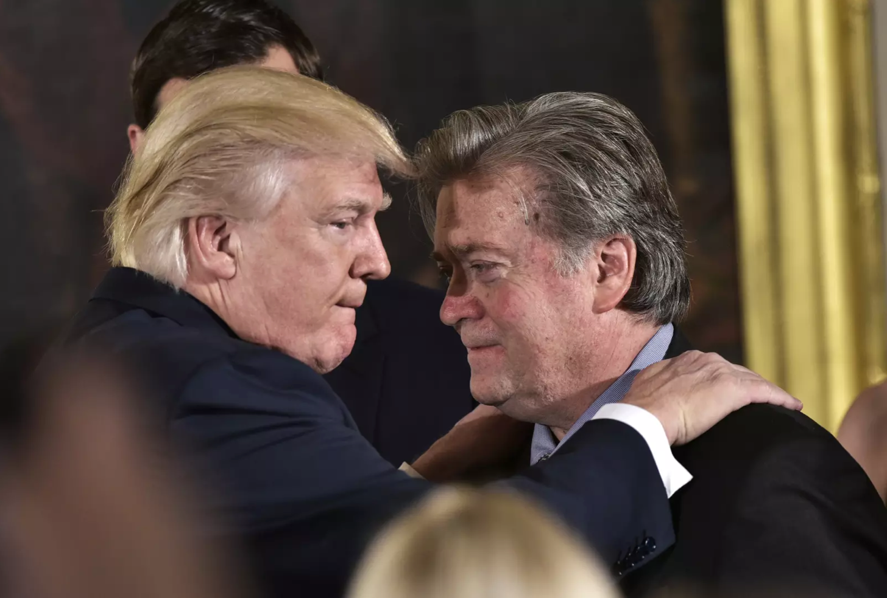

Print
State of Nature
When one refers to a state of nature, it means referring to the individuals without any central authority. A none governmental society. A situation in the state of nature is one where you have elaborate rights and duties, but no effective means for enforcement. Each person has a natural liberty. What happens in many cases is that the balance of power starts to become awkward and individual lives and property are threatened.
1
Many philosophers analysed what state of nature means and what it would have looked like to live in one. The most romanticised hypothesis had Jean-Jacques Rousseau who thought that civilisation did not improve people. Instead they had exacted a terrible destructive influence on the morality of human beings, who had once been good. He explored his opinions in his book “The Discourse on the Origins and Foundations of Inequality”. Rousseau's arguments are simple. Individuals had once beed good but as people had emerged from their pre social state and joined society, they had become plagued by vice and sin. He sketched how it might have looked like at the beginning of history, in his might an idyllic period that he refers to as state of nature. Rousseau saw this period as a time when people had more of an understanding of their own minds, and so being drawn towards essential features of a satisfied life. In his mind, the state of nature was moral and guided by spontaneous pity and empathy. He claimed that moving towards civilisation had awakened unhealthy form of self-love. This destructive form of love had emerged when people moved to cities and they started to compare to others and created their identities based on other people.
2
A similar perspective on state of nature also had John Locke. In his book “The two Treatises of Government”. In this Second Treatise he discusses the state of nature. He argues that state of nature would have been very peaceful and that in agreeing to submit to governments people have therefore not, fearfully agreed to all their rights.
3What happened is that people possessed a range of alienable or natural rights that no ruler could ever take away. The stronger the grounds for accepting Locke’s characterisation of people as free, equal, and independent, the more helpful the state of nature becomes as a device for representing people.
Thomas Hobbes had a totally different opinion. He characterised the state of nature as a “war of every man against every man,” a constant and violent condition of competition in which each individual has a natural right to everything, regardless of the interests of others. Existence in the state of nature is, as Hobbes famously states, “solitary, poor, nasty, brutish, and short.”
4The only laws that exist in the state of nature (the laws of nature) are not covenants forged between people but principles based on self-preservation. In the absence of a higher authority to adjudicate disputes, everyone fears and mistrusts everyone else, and there can be no justice, commerce, or culture. That unsustainable condition comes to an end when individuals agree to relinquish their natural rights to everything and to transfer their self-sovereignty to a higher civil authority, or Leviathan.
Nowadays in society we try to believe that the modern idea of state of nature can be achieved through machines which will create a total democratic system. Unfortunately it only shifted the power from governmental authorities to global economics, technology and internet. We are moving forward to hybrid of machine and organism which Donna Haraway describes as Cyber organism. Cyber organism represents social reality as well as fiction and the technological growth we are already facing. We manifesto shows how attached our society is to technology. Throughout her Cyborg Manifesto she analyses a relationship between organism and machine arguing that machines are becoming more vivid while we are becoming more and more inert. Simple example is a person behind the smart phone. The smartphone is doing all the work while the human is barely moving. The paradox is that machines are more alive while organisms are settling in and becoming objects.
5
We have come to believe that the hierarchy of power can be replaced by the self organising networks. From internet utopianism to the global economic system and above all the eco system of the natural world. Today we dream of systems that can balance and systemise themselves without the intervention of authoritarian power. But in reality this is the dream of machines. It reflects how they are organised. It has nothing to do with nature. And as a model for human society and for politics it is holy adequate in the face of a powerful dynamic forces that really dominate the world today.
Government and Citizen
In order to discuss a government and its role it is important to understand the relationship between government and its citizens. In Giorgio Agamben's book “Homo Sacer: Sovereign Power and Bare Life” a big underlying question is why modern democratic states turn into totalitarian states.
6 It is important to look at the distinction between Bios and Zoe. Bios means a political life, life in society, social life on the other side Zoe means bare life, animal life, life given by God. We can look at Bio and Zoe as mind and brain, is my mind controlling my body or is my body experiencing my mind. In Roman society Homo Sacer was somebody who was punished and exiled from society. His Bio was removed and he was left with bare life, Zoe. The right to kill or exile someone is a definition of sovereignty. In the age of monarchy the sovereign was the king. It is a typical social structure where the king is the subject and all others are objects. Later the Declaration of Independence changed it and now every man became subject, they where all equal. But sovereignty and right to kill still remains but it is a collective, not individual responsibility.
Agamben as well as Foucault thought that biology is the emergence of modernity it is a totalitarian ideology in its very nature. The way, how biology measures life, it reduces people to their animal qualities. In a way it measures life of citizens to objects, Zoe. But nation state designates its citizens as subjects, Bios. This is where the concept of Bio and Zoe become combined. In modern state the subject is defined as an object within the system, biological object with political rights. It conceives of itself as made up from the bodies of citizens. The state has a stake in the physical life of its constituents. It is responsible for the health of its citizens. And this is biopolitics. A political control over bare life, which also means political control of death when you take the citizenship of an individual, they can be killed without committing a crime. Looking at Nazi Germany. It was so important to get rid of Jews citizenships before they would be killed. The state defined by bare life that constitutes it sought to purge the abnormal from its body.
7
Biology gives democratic states the opportunity to create a Homo Sacer position. The device used by States to expel people to reduce them to bare life is the state of exception. In Agamber’s mind the state of exemption is a normal thing that modern states do. It means that a citizens political life, Bio, the only thing that protects him from being killed exploited are being denied or refuged is only giving with the understanding that it can be removed if he is placed in state of exemption. Basically what it means is that all your rights can be taken away. Because biology makes the state focus on its citizens as bare life then if you happened to be perceived as a threat to its bare life, your expulsion abuse can be legalised and justified. As modern democracy has this inherent totalitarian control over life it is a totalitarian system of course not as extreme as Nazi Germany but fully capable of becoming so. What why the modern democratic nation-state supposed to deliver equal right to man as in the foundation of its design the ability to deprive those very rights. For Agamben the power to become a totalitarian state makes you totalitarian state.
The intriguing idea that all your rights can be taken away brings the concept of origin of human rights. From the point of individualist ideology where individualists believe that human rights are God's given rights. Human rights comes with each individual when he is born. These rights are not giving to as they are part of us. Collectivist, on the other hand, believe they are granted to us by the state. You do not have rights, you are giving rights by the state. This makes a very important difference. If you read the documents of all the totalitarian systems, it says in plane English that the rights are given to you and of course after this statement you have written all the great human rights. So if the state can grant you the right they have every right to take it away from you. A totalitarian control over life.
Government under Populism
Throughout history there was a constant search for finding the perfect way how to govern society. It seems almost impossible to find the right way, maybe because the right way does not exist. All the systems, ideas, believes were, in their basic, the same. Looking at the history, there was Communist versus Fascist and they fight wars, but when you examine Communist, Fascism or Nazism you find out there is not that much of a difference between the sides. And you get bigger arguments between Capitalists so called and socialist so called and liberals and conservatives, democrats and republicans, and all these world are flying around and nobody is able to really defend what they mean, they have emotional understanding of them but then you ask them to define the world most of the time it agrees with the dictionary definition and most of the time there is not depth to it, people respond in the way they feel about it. All of these isms are a variant of collectivism. When you look at them closely they are all the same, the same substance underneath if you peel of the label and you ignore the design of the uniforms worn by the military of those regimes and if you ignore the design of the nationalistic flag, you get down to the hardcore of what they believe, you will find that what they believe is exactly the same.
8
Milton Friedman had the ideal perception of a perfect role of government. In his mind the key element was the opposite of collectivism, individualism. To society where individuals have a maximum freedom to pursue their own objectives in any direction they wish as long as it doesn’t interfere with the rights of other individuals. Of course also in a society like this, you would need government, but a government with very limited power. The government should protect an individual from coercion and finally to provide a mechanism that would formulate rules that will properly govern. To regard private property, rights of individuals legislative process and as part of that a mechanism for judging differences of opinions. So in a perfect kind of society you have government devoted to the tasks of defence of justice, legislating rules and very little else. The rest would be left to the free individual activities joined together through the operation of private and competitive market.
9
Very similar opinion shared Ayn Rand. In her philosophy of objectivism, she claims that human beings were lone in the universe and they should free themselves from all political and religious control and live a life for their selfish desire. If they did this they would become heroic figures. If man wants to live on earth his highest moral purpose is an achievement of his own happiness. He must not be forced by other people nor accept their right to force him. Each man must be at the end himself and power his own rational self interest. She predicted a dictatorship and an economic disaster for the United States, if the collectivist trend continues, but she also believed that people do not have to go in that direction, men have the free will to choose and think. If people change their thinking, they do not have to go into dictatorship.
10
Ayn Rand brings the idea of altruism, the care of others as on organising principle of society and she became a great inspiration for Silicon Valley. Many of people in Silicon Valley are greatly inspired by Ayn Rand, entrepreneurs who were building computers, entrepreneurs in biotech, software, internet, networking. For them she represented vision, vision of a moral exciting project.
11The project was about much more than being Rands’s hero. The idea was that computer technologies could turn everyone into heroic individuals. It was a vision of the society where the old forms of the political control would be unnecessary, because the computer networks would create a society without central control. Ever since 1970 computer utopian believed that if human beings are linked by computers then together they could create their own mind of order. That was a naive idea of creating a self-stabilising system. The feedback of information between all the individuals connected as notes and networks would work to create a self stabilising system. The world would be stable and everyone would be heroic, Rand’s hero completely free to follow their desires. Of course what happened is that the essential idea of individualism slowly disappeared and we all became fragments of the “uncontrolled” cyber system.
In this cyber system there was created a new model of collectivism, a cyber-collectivist. New threat to our liberties, for this threat is real and imminent. This threat is manifested in policy battles over net neutrality regulation of communications networks; efforts to “save journalism” through a massive infusion of State subsidies; proposals to impose a variety of “localism” or “diversity” requirements on local media outlets; efforts to abolish virtually any sort of copyright / IP protection; and in a renewed war on commercial advertising and marketing, which have traditionally sustained a free, independent press. Cyber-collectivism refers to the general belief that cyber-choices should be guided by the State or an elite class according to some amorphous “general will” or “public interest.”
Unfortunately the idea of creating a system without any central control is naive. Looking back at Thomas Hobbes who strongly believed that society needs a ruler, government seems to be true. Perhaps, it is deeply embedded in a human subconscious a need for higher power, leader. Maybe it is impossible to create a system in this world that will function for everyone equally. The world would be always ruled by specific group of people. The only thing that is visibly changing is the power shits from government and politicians to businessmen and technology.
Power shifts, technology growth, cyber system, collectivism, nationalism, all elements, lead to the present trend of collectivism, based on nationalistic beliefs, called populism. Populism is easily applied political belief that the hardworking majority is undermined by a small, elite minority. The populist politicians claim to represent the interest of average working class and unite the population against a common enemy. For a politician like Donald Trump the enemy were immigrants. Most of the citizens ted to follow populists idea because of their lack of trust in traditional institutions. Populism is always presented with charismatic demagogues as these personality types are often successful at galvanising the masses. The result of the populism was also behind the 2016 Brexit referendum, as many working class Brits felt that globalisation provided by EU was not to their best benefit. For people like Trump the populism is used to tap into voters frustrations with bureaucrats and general distrust of the federal government. The social and economic problems that we are currently dealing with started decades ago and have gradually increased over time. These social and economic problems pushed many voters to embrace radical change. In current situation it is not only Donald Trump as a populist figure. In Europe we are facing the same populist trend. In France it is Marine Le Pen, in Germany there are Alice Weidel and Alexander Gauland, in Holland Geert Wilders and they all fight for similar goals, reducing refugees, rise of nationalism or de- islamisation. The danger of populism is that i has tendency to shifts from populism into authoritarianism.
12
Each populist leader has a great power to manipulate with people and give exactly what the majority asks for. Thanks to the rise of terms such as fake news and post truth, democratic states have also become a serious part of the propaganda debate. But what does that word actually mean, "propaganda"? And in what way does it give concrete shape and substance to our reality?
The age of Alternative Facts
In January 2018 the white House press secretary Sean Spicer's false claims about the size of the crowd at President Donald Trump's inauguration. He said it was the largest audience to ever witness on inaugurations. By the photo comparison to Obama’s inauguration, it was clearly not true.When Chuck Todd asked, Kellyanne Conway, Trump’s Counselor, in his interview why the president ask the white house press secretary to tell a provable falsehood, her answer was impressive. Conway said it was not a falsehood it was an “alternative facts”. Clearly, Donald Trump is attempting to twist the norms of our democracy to his own will.
13 Clearly, Donald Trump is attempting to twist the norms of our democracy to his own will. The alternative facts shows that there are people in politics who understand that you can create a different understanding of reality you can change politics or anything else.
Already Socrates knew about power of demagogues. He asked us to imagine an election debate between two candidates, one who was like a doctor and the other who was like a sweet shop owner. The sweet shop owner, a demagogue, would say of his rival: Look, this person here has worked many evils on you. He hurts you, give you bitter potions and tells you not to eat or drink whatever you like. He will never serve you feasts of many and varied pleasant things like I will. As a result, we have elected many sweet shop owners, and very few doctors.
14Most of the populists are sweet shop owners, they promise you great changes but most of the time it is very temporary solution.
A demagogue is a voice of political manipulation. We had many “great” demagogues throughout history. Edward Bernays studied group dynamics and become the father of public relation. In 1928 we authored the book “Propaganda”. He describes how to consciously manipulate the habits and opinions of masses within a democratic society he went on to state that those who harness this unseen mechanism of society constitute an invisible government and are the true ruling power. It is they who pull the wires which control the public mind, who harness old social forces and cognitive new ways to bind and guide the world.
15 Modern democratic propaganda, which shapes reality without the general public having the impression that its democratic rights and freedoms are limited. In other words, democratic propaganda has the task of never being visible or recognisable as propaganda.
Perfect example of modern propaganda is Steve Bannon, the former campaign manager of Trump and is also a Hollywood producer. Bannon rejected the progressive-liberal culture of Hollywood and linked himself to radical nationalist movements, including the later Tea Party movements. When we look at Bannon's documentaries that he directed between 2004 and 2016, there is a trumpism in concept form. The obsession with great leaders who have a final battle between good and evil is already central in In the Face of Evil (2004), in which Ronald Reagan is depicted as a heroic warrior in the face of communist evil - an evil that is now, in Bannon's eyes manifest in the form of Islam fascism. There is a version of Trump in The Undefeated(2011), in which the former Republican Vice President Sarah Palin is central as an epic embodiment of economic nationalism, religious and family values and opposition to Islamism and migration. And the apocalyptic character of Trumps' geopolitical provocations is reminiscent of Bannon's latest film, Torchbearer (2016), which announces an inevitable final battle between Christian free market nationalists on the one hand and Islamists and progressive secularists on the other.Propaganda art, Bannon teaches us, is not about sending messages in the world as it is: it is about making worlds.
16
Our contemporary propaganda struggle is shaped by various performances of power. Each with their own infrastructures, each attempting to shape reality after their particular interests. We can see the particular relationship between power and form. In recent times we have witnessed that propaganda can bring into motion vast geopolitical processes from the Brexit vote to the election of Trump, many examples of the new authoritarian world order. It is important nowadays that we understand propaganda and to analyse different propagandas that shape our world today. But if we also want to oppose them we will need infrastructures of our own, we will need our own narratives to mobilise the imagination to construct a different world instead, for this we need an emancipatory propaganda. Because the core, if we talk about post truth, that there is no reality to return to, there is nothing to go back to, there are only realities that we collectively offer ourselves.


Fig,1. Rubens, Pieter Paul ,The Bacchanal of the Andrians [Oil Painting]. (1523-5). Retrieved from https://nl.wikipedia.org/wiki/Bestand:Peter_Paul_Rubens_012.jpg
Fig.3. Fritz Lang, Metropolis [Film shot]. (1927). Retrieved from https://josephnechvatal.wordpress.com/2015/08/01/book-review-of-the-posthuman-by-rosi-braidotti/
Fig.3. SA members carrying out a boycott of Jewish shops, [Photo]. (1930). Retrieved from https://www.taringa.net/+imagenes/9-11-1938-la-noche-de-los-cristales-rotos_whpog
Fig.4. Under the Leadership of the Great Stalin - Forward to Communism [Propaganda Poster].(1946). Retrieved from http://guweb2.gonzaga.edu/faculty/brunell/EE%20Stalinism.htm
Fig.5. Robert Cenedella , Fín del Mundo, [Painting]. (2016). Retrieved from https://www.rcenedellagallery.com/content/3064-f%C3%ADn-del-mundo-end-world
Fig.7. Philipp Foltz . , Oraison funèbre de Périclès, 1877, Painting,
Fig.8. Alternative Fact [Photograph]. (2018) Retrieved from https://www.theatlantic.com/politics/archive/2017/01/inauguration-crowd-size/514058/
Fig.9. Trump congratulates White House strategist Stephen Bannon
[Photograph]. (2017). Retrieved from http://time.com/5089028/donald-trump-steve-bannon-cease-desist/
Fig.10. Step Into Your Place [Poster]. (1916). Retrieved from https://www.wdl.org/en/item/4630/
1 State of nature.(2018, November 14).
Click!
2 Review and Analysis: Jean-Jacques Rousseau’s ‘Discourse on the Origin and Foundations of Inequality Among Men.
Click!
3 Locke, John. Two Treatises of Government. 1772,
Click!
4 Schmitt, The Leviathan in the State Theory of Thomas Hobbes: Meaning and Failure of a Political Symbol. 2008.
Click!
6 Agamben, Giorgio, and Daniel Heller-Roazen. Homo Sacer: Sovereign Power and Bare Life. Stanford University Press, 2016.
7 Internet Encyclopedia of Philosophy, Internet Encyclopedia of Philosophy,
Click!
8 Collectivism is the idea that the individual’s life belongs not to him but to the group or society of which he is merely a part, that he has no rights, and that he must sacrifice his values and goals for the group’s “greater good.” According to collectivism, the group or society is the basic unit of moral concern, and the individual is of value only insofar as he serves the group. As one advocate of this idea puts it: “Man has no rights except those which society permits him to enjoy. From the day of his birth until the day of his death society allows him to enjoy certain so-called rights and deprives him of others; not . . . because society desires especially to favor or oppress the individual, but because its own preservation, welfare, and happiness are the prime considerations.”
9 BasicEconomics. “Milton Friedman - The Role of Government in a Free Society.” YouTube, YouTube, 25 Apr. 2012,
Click!
10 Sr, Justin Templer. “The 1959 Mike Wallace Ayn Rand Interview.” YouTube, YouTube, 1 Nov. 2011,
Click!
11 In Ayn Rands book “Atlas Shrugged” the government and the state control everything, but one by one, the creative individuals , industrialists, inventors and artist are mysteriously disappearing, they have gone on strike, they hide out in a mountain valley as America falls apart. At the end of the book they reappear and set up to build a great vision of the world to come. The world in which politics disappear, and is based on virtues of selfishness as see called it.